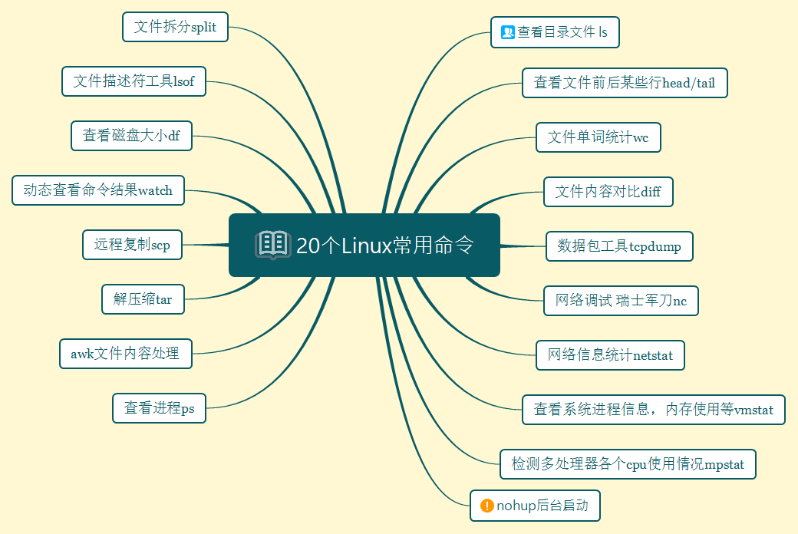

1 查看目录以及权限
在windows中，使用dir查看当前目录中文件。在Linux中使用ls(list)查看当前目录文件。
windows中的dir，如下图所示
在Linux中，通常使用ls -l列出，其中可以查看文件属性，所属用户组等较为详细的信息。下面详细解释从左到右每一列是什么意思
第一列第一个字段：文件类型，后面9个字符是模式，其中分为三组，每一组三个字段。第一组为所属用户权限。第二组为所属组的权限。第三组为其他用户所属权限。其中r(read)代表可读，w(write)代表可写，e(execute)代表可执行。在后面的9个字符中，如果是字母说明有相应的权限，如果为”-“代表没有权限。举一个例子
-rw-r-r–:此为普通文件，对于所属用户为可读可写不能执行，对于所属组仅仅可读，对于其他用户仅为读。
第二列 硬链接数目
硬链接允许作用之一是允许一个文件拥有多个有效路径名，从而防止误删。但是只能在同一文件系统中的文件之间进行连接，不能对目录进行创建。
第三列是所属用户，第四列为所属组，第五列为文件大小，第六列为文件被修改的时间，最后为文件名。其中使用chown改变所属用户，chgrp改变所属组。
2 nohup (no hang up不要挂起的意思)
这也是常用后台启动程序的常用方法，如果在交互命令行中运行程序，我们很容易就终止它。在交互环境下，我们的输出一般都会直接输出到当前界面，在后台启动的时候通常会定向到文件，那通常情况是下面这个命令。
nohup command >X.file 2 >&1 &
其中1表示标准输出。2表示文件标准错误输出。2>1&即将两者合并，但是合并到哪里，就是X.file.
3 查看进程
有的时候我们需要查看进程是否已经启动或者尝试终止进程。经常使用的命令为ps -ef—列出当前正在运行的程序，那如何定位我们想要查看的进程A，这个时候使用grep，即ps -ef| grep A.
4 awk
如果文件是csv(a.csv)，按照”,”分割，需求为打印第一列和第二列
awk -F “,” ‘{print 2}’ a.csv
获取第三列最大值
awk ‘BEGIN{max=0}{if(3}END{print max}’
5 tar解压缩
解压缩命令
常用参数
-c:创建的tar文件
-x:解开tar文件
-t:列出tar文件中包含的文件信息
-r：附加新的文件到tar文件中
常用命令组合
tar -xvf /home/a.tar //打开tar打包文件
tar -zxvf /home/a.tar.gz //解压以gzip压缩的文件
tar -jxvf /home/a.tar.bz2 //解压以bzip压缩的文件
tar -cvf /home/a.tar /home 打包/home下所有文件
6 scp
通过scp命令在多台服务器中的相互复制 传输文件。为了省下输入密码，可以设置免密登录。
常用组合：
例子1：将A服务器中/home/a.txt 复制到B服务器的/home中
scp -r /home/a.txt root@B_ip:/home
7 林哥的死亡命令 rm -rf
翻车现场请看次条。
8 watch
这个命令是动态查看命令执行的结果。比如如果需要每隔一秒高亮显示网络连接数的变化情况。则 watch -n 1 -d netstat -ant
例子：每隔一秒高亮显示http连接数的变化情况
watch -n 1 -d ‘pstree | grep http’
例子:十秒一次输出系统的平均负载
watch -n 10 ‘cat /proc/loadavg’
9 df
查看磁盘大小
df -h

10 tcpdump
和它类似的工具在windows中是wireshark，其采用底层库winpcap/libpcap实现。采用了bpf过滤机制。下面我们看看提供的不同参数的含义。
| 参数名 | 含义 |
|---|---|
| -n | 使用IP地址表示主机。使用数字表示端口 |
| -i | 指定要监听的端口。如果为”-i any”表示住区所有网卡数据包 |
| -v | 输出诸如ip数据包中的TTL更加详细的信息 |
| -t | 不打印时间戳 |
| -e | 显示以太网帧头部信息 |
| -c | 仅仅抓取指定数量的数据包 |
| -x | 按照十六进制显示数据包内容 |
| -X | 不仅仅输出-x结果还输出十六进制对应的ASCII字符 |
| -s | 设置抓包时的抓包长度 |
| -w | 将输出结果定向到某个文件，一般为pcap后缀 |
| -r | 从文件读取数据包并显示数字表示端口 |
| -i | 指定要监听的端口。如果为”-i any”表示住区所有网卡数据包 |
| -v | 输出诸如ip数据包中的TTL更加详细的信息 |
| -t | 不打印时间戳 |
| -e | 显示以太网帧头部信息 |
| -c | 仅仅抓取指定数量的数据包 |
| -x | 按照十六进制显示数据包内容 |
| -X | 不仅仅输出-x结果还输出十六进制对应的ASCII字符 |
| -s | 设置抓包时的抓包长度 |
| -w | 将输出结果定向到某个文件，一般为pcap后缀 |
| -r | 从文件读取数据包并显示 |
知道了相关参数，下面看几个案例
| 执行任务 | 执行命令 |
|---|---|
| 捕获特定网口数据包 | tcpdump -i eth0 |
| 捕获特定个数(1000)的包 | tcpdump -c 1000 -i eth0 |
| 将捕获的包保存到文件 | tcpdump -w a.pcap -i eth0 |
| 读取pcap格式的包 | tcpdump -r a.pcap |
| 增加捕获包的时间戳 | tcpdump -n -ttt -i eth0 |
| 指定捕获包的协议类型 | tcpdump -i eth0 arp |
| 捕获指定端口 | tcpdump -i eth0 post 22 |
| 捕获特定目标ip+port的包 | tcpdump -i eth0 dst address and port 22 |
| 捕获DNS请求和响应 | tcpdump -i eth0 -s0 port 53 |
| 匹配Http请求头 | tcpdump -s 0 -v -n -l |
| 将捕获的包保存到文件 | tcpdump -w a.pcap -i eth0 |
| 读取pcap格式的包 | tcpdump -r a.pcap |
| 增加捕获包的时间戳 | tcpdump -n -ttt -i eth0 |
| 指定捕获包的协议类型 | tcpdump -i eth0 arp |
| 捕获指定端口 | tcpdump -i eth0 post 22 |
| 捕获DNS请求和响应 | tcpdump -i eth0 -s0 port 53 |
| 捕获特定目标ip+port的包 | tcpdump -i eth0 dst address and port 22 |
| 匹配Http请求头 | tcpdump -s 0 -v -n -l |
11 lsof
列出当前系统打开的文件描述符工具。可以得知感兴趣的描述符是被哪些进程使用
同样，我们看看相关参数
| 参数 | 描述 |
|---|---|
| -i | 显示sokcet文件描述符 |
| -c | 显示指定的命令打开的所有文件描述符 |
| -t | 仅显示打开了目标文件描述符的进程pid |
老规矩，上几个例子
| 执行任务 | 命令 |
|---|---|
| 列出所有的网络链接 | lsof -i |
| 列出所有udp的网络链接 | lsof -i udp |
| 列出谁在使用某个端口 | lsof -i :3306 |
| 列出谁在使用特定的tcp端口 | lsof -i tcp:80 |
| 根据文件描述范围列出文件信息 | lsof -d 2-3 |
12 nc
nc–>“瑞士军刀”。不知大家在渗透过程中，拿了shell有没有使用nc搞点事儿。它用来快速构建网络链接。常用来调试客户端程序。
| 参数 | 描述 |
|---|---|
| -i | 设置数据包传送的时间间隔 |
| -l | 以服务器方式运行。默认为客户端运行 |
| -k | 重复接受并处理某个端口上的所有链接 |
| -p | 以客户端运行时强制其使用指定端口 |
| -C | 将CR和LF两个字符作为结束符 |
| -u | 使用udp协议。默认tcp协议 |
| -X | nc客户端余代理服务器通信时默认为socks5协议。 |
| -z | 扫描目标机器某个范围服务是否开启 |
小贱上案例
| 执行任务 | 执行命令 |
|---|---|
| 扫描机器A端口号在30-40的服务 | nc -z A 30-40 |
| 连接服务器A 端口号为5000 | nc -C A 5000 |
| 传送文件 | MachineA:nc -v -n ip portE:\a.exe |
13 netstat
netstat是一个网络信息统计工具。它可以得到网卡接口上全部了解，路由表信息，网卡接口信息等。通常在网络编程中我们用它来显示TCP连接以及状态信息。
| 参数 | 描述 |
|---|---|
| -n | 使用IP地址表示主机 |
| -a | 显示结果中包含监听的socket |
| -t | 仅显示TCP连接 |
| -r | 显示路由信息 |
| -i | 显示网卡接口数据流量 |
| -c | 每隔1s输出一次 |
| -o | 显示socket定时器的信息 |
| -p | 显示socket所属的进程的PID和名字 |
下面列举几个常用例子
| 执行任务 | 执行命令 |
|---|---|
| 列出所有连接 | netstat -a |
| 只列出TCP或者UDP | netstat -at/netstat -au |
| 列出监听中的连接 | netstat -tnl |
| 获取进程名、进程号以及用户 ID | nestat -nlpt |
| 打印统计信息 | netstat -s |
| netstat持续输出 | netstat -ct |
| 打印active状态的连接 | netstat -atnp | grep ESTA |
| 查看服务是否运行(npt) | netstat -aple | grep ntp |
14 vmstat
vmstat能够实时输出系统的进程信息，内存使用，cpu使用等资源的使用情况
| 参数 | 描述 |
|---|---|
| -f | 显示系统自启动以来执行的fork次数 |
| -s | 显示内存相关统计信息 |
| -d | 显示磁盘相关统计信息 |
| -p | 显示指定磁盘分区统计信息 |
| count | 采样次数。 |
看一下vmstat都有哪些输出字段。
| 字段名 | 描述 |
|---|---|
| procs | r表示等待运行的而进程数目。b表示处于不可中断睡眠状态的进程数目 |
| memory | swpd：使用的虚拟内存量。free：空闲内存量。buff：用作缓冲区的内存量。cache：用作缓存的内存量。 |
| swap | si：从磁盘换入的内存量（/s）。so：交换到磁盘的内存量（/s）。 |
| io | bi：从块设备接收的块（blocks/s）。bo：发送到块设备的块（blocks/s）。 |
| system | in：每秒中断的次数，包括时钟。cs：每秒上下文切换的次数。 |
| 这里注意哈，如果查看磁盘的更加详细信息，有另外iostat所得到的信心就更加详细哟 |
15 mpstat
能够实时监测多处理器系统中各个cpu的使用情况。这个命令的执行需要安装sysstat，在centos中执行yum install systat就好了。
然后我们看看各个字段什么意思。
| 字段 | 描述 |
|---|---|
| cpu | 表示当前条信息属于哪个cpu的数据 |
| %usr | 进程运行在用户空间所占cpu运行时间的比例 |
| %nice | nice值为负的进程运行在用户空间的时间占cpu总运行时间的比例 |
| %iowait | cpu等待磁盘操作的时间占cpu总运行时间的比例 |
| %irq | cpu用于处理硬件中断时间占cpu总运行时间的比例 |
| %soft | cpu用于处理软件中断的时间占cpu用运行时间的比例 |
| %steal | 一对虚拟cpu。当超级管理员在处理某个虚拟cpu时，另一个等待它处理完才能运行。这段等待时间表示为steal时间占总运行时间的比例 |
| %guest | 运行虚拟cpu时间占cpu总运行时间的比例 |
| %idle | 系统空闲时间占cpu总运行时间的比例 |
16 split
将文件分割为数个。
split -5 a.txt//将a.txt每5行分割为一个文件
17 wc -c +filename
统计文件中单词的个数。
18 more/less
一页一页显示，通过空白键显示下一页/上一页
19 head/tail
查看某文件前几行或者后几行
20 diff
diff -c file1 file2 //显示两个文件的差异